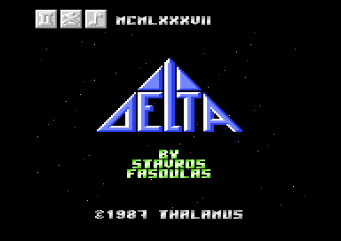

<meta charset="utf-8">
<meta name="viewport" content="width=device-width, initial-scale=1">
<title>{{title}}</title>
<link rel="preconnect" href="https://fonts.googleapis.com">
<link rel="stylesheet" href="https://fonts.googleapis.com/css2?family=Lato:wght@400;700;900&family=IBM+Plex+Mono:wght@400;500&display=swap">
<link rel="stylesheet" href="reference/delta-page.css">
<!-- tabs -->
<header class="hero">
  <p class="eyebrow">{{platform}} · {{year}} · {{publisher}}</p>
  <h1>{{title}}</h1>
  <p class="sub">A joystick in either port or five keys in play, three function keys on the title, and a pause key with a way out.</p>
</header>
<main class="wrap">
<section id="controls">
  <p class="fig">01 · Inputs</p>
  <h2 class="t">A joystick in either port, or five keys</h2>
  <p class="lede">Both joystick ports steer the ship at once. The keyboard takes over only if the title screen's F3 option says so.</p>
  <div class="scroll"><table>
    <tr><th>Input</th><th>Where</th><th>Effect</th></tr>
    <tr><td>Joystick, either port</td><td>play</td><td>both ports are read and combined (<code>read_joysticks</code>, <code>$3375</code>)</td></tr>
    <tr><td>W, X, A, D, RETURN</td><td>play, after F3</td><td>up, down, left, right, fire (<code>read_keys</code>, <code>$0C40</code>)</td></tr>
    <tr><td>Fire</td><td>title</td><td>starts the game</td></tr>
    <tr><td>F1</td><td>title</td><td>one or two players; turns pass at each death</td></tr>
    <tr><td>F3</td><td>title</td><td>joystick or keyboard</td></tr>
    <tr><td>F5</td><td>title</td><td>sound effects or music in play</td></tr>
    <tr><td>SPACE</td><td>title</td><td>shows the three options</td></tr>
    <tr><td>RUN/STOP</td><td>play</td><td>pause; fire resumes, T quits to game over (<code>pause_check</code>, <code>$9A30</code>)</td></tr>
    <tr><td>RESTORE</td><td>anywhere</td><td>nothing: the NMI vector points at an <code>RTI</code> at <code>$FFF8</code></td></tr>
  </table></div>
  <p>The game reads both joystick ports and ORs them, so a player can plug into either port, and two joysticks held at once steer the ship together. With keyboard control on, <code>read_keys</code> reads W, X, A and D for the four directions and RETURN for fire instead.</p>
  <p>How fast the ship answers the stick is not fixed. The speed icon in the <a href="gameplay.html#shop">shop</a> sets it to 1, 2, 4 or 8 pixels a frame, and buying it again at the top speed goes back to the slowest.</p>
</section>

<section id="title">
  <p class="fig">02 · The title screen</p>
  <h2 class="t">Three options, each shown as a sprite</h2>
  <figure class="overview-shot"><figcaption>The title after SPACE: the three option sprites for players, controls and sound.</figcaption></figure>
  <p>The title screen's keys are read in its raster interrupt (<code>irq_title_keys</code>, <code>$0C90</code>). F1, F3 and F5 each flip one setting: the number of players (<code>$12CA</code>), joystick or keys (<code>$0FFC</code>), and music or sound effects in play (<code>$0FFD</code>). Each setting is shown by a sprite whose frame the game swaps, from the pairs at <code>$43C0</code>, <code>$43C2</code> and <code>$43C4</code>.</p>
  <p>In a two-player game the players take turns, and the turn passes at each death (<code>swap_players</code>, <code>$1650</code>). Each player keeps their own lives.</p>
</section>

<section id="pause">
  <p class="fig">03 · Pausing</p>
  <h2 class="t">RUN/STOP pauses, and T gives up</h2>
  <p>RUN/STOP stops the game where it is (<code>pause_check</code>, <code>$9A30</code>). Fire carries on. Pressing T during the pause ends the game at once and goes to the game-over screen.</p>
  <p>RESTORE, which stops many games or resets the machine, does nothing in Delta. The processor jumps through the NMI vector when it is pressed, and the vector points at a single <code>RTI</code> at <code>$FFF8</code>.</p>
</section>

<section id="demo">
  <p class="fig">04 · The demo</p>
  <h2 class="t">The demo flies on a recorded joystick</h2>
  <p>The demo on the title replays 63 recorded joystick bytes from <code>$9F40</code>, one every eight frames. The game points its own joystick read at <code>$0F90</code> for the demo by patching the instruction (<code>demo_joystick_patch</code>), so the ship flies by the same code as in play.</p>
  <p>The joystick also enters a name in the high-score table, eight letters long (<code>hiscore_entry_step</code>, <code>$1E52</code>).</p>
</section>

</main>
<footer style="margin:16px 0 0;padding:22px var(--gx) 0;border-top:1px solid #e0ded8;font-family:'IBM Plex Mono',ui-monospace,Menlo,monospace;font-size:12px;color:#80838a"><a href="https://github.com/gamesexplained/gamesexplained" aria-label="GitHub" style="display:inline-flex;align-items:center;justify-content:center;width:26px;height:26px;margin-left:8px;border:1px solid #e0ded8;border-radius:7px;background:#ffffff;color:#80838a;vertical-align:middle"><svg width="15" height="15" viewBox="0 0 24 24" fill="currentColor" aria-hidden="true"><path d="M12 .297c-6.63 0-12 5.373-12 12 0 5.303 3.438 9.8 8.205 11.385.6.113.82-.258.82-.577 0-.285-.01-1.04-.015-2.04-3.338.724-4.042-1.61-4.042-1.61C4.422 18.07 3.633 17.7 3.633 17.7c-1.087-.744.084-.729.084-.729 1.205.084 1.838 1.236 1.838 1.236 1.07 1.835 2.809 1.305 3.495.998.108-.776.417-1.305.76-1.605-2.665-.3-5.466-1.332-5.466-5.93 0-1.31.465-2.38 1.235-3.22-.135-.303-.54-1.523.105-3.176 0 0 1.005-.322 3.3 1.23.96-.267 1.98-.399 3-.405 1.02.006 2.04.138 3 .405 2.28-1.552 3.285-1.23 3.285-1.23.645 1.653.24 2.873.12 3.176.765.84 1.23 1.91 1.23 3.22 0 4.61-2.805 5.625-5.475 5.92.42.36.81 1.096.81 2.22 0 1.606-.015 2.896-.015 3.286 0 .315.21.69.825.57C20.565 22.092 24 17.592 24 12.297c0-6.627-5.373-12-12-12"/></svg></a><a href="https://discord.gg/3V9GWyRDWV" aria-label="Discord" style="display:inline-flex;align-items:center;justify-content:center;width:26px;height:26px;margin-left:8px;border:1px solid #e0ded8;border-radius:7px;background:#ffffff;color:#80838a;vertical-align:middle"><svg width="15" height="15" viewBox="0 0 24 24" fill="currentColor" aria-hidden="true"><path d="M20.317 4.3698a19.7913 19.7913 0 00-4.8851-1.5152.0741.0741 0 00-.0785.0371c-.211.3753-.4447.8648-.6083 1.2495-1.8447-.2762-3.68-.2762-5.4868 0-.1636-.3933-.4058-.8742-.6177-1.2495a.077.077 0 00-.0785-.037 19.7363 19.7363 0 00-4.8852 1.515.0699.0699 0 00-.0321.0277C.5334 9.0458-.319 13.5799.0992 18.0578a.0824.0824 0 00.0312.0561c2.0528 1.5076 4.0413 2.4228 5.9929 3.0294a.0777.0777 0 00.0842-.0276c.4616-.6304.8731-1.2952 1.226-1.9942a.076.076 0 00-.0416-.1057c-.6528-.2476-1.2743-.5495-1.8722-.8923a.077.077 0 01-.0076-.1277c.1258-.0943.2517-.1923.3718-.2914a.0743.0743 0 01.0776-.0105c3.9278 1.7933 8.18 1.7933 12.0614 0a.0739.0739 0 01.0785.0095c.1202.099.246.1981.3728.2924a.077.077 0 01-.0066.1276 12.2986 12.2986 0 01-1.873.8914.0766.0766 0 00-.0407.1067c.3604.698.7719 1.3628 1.225 1.9932a.076.076 0 00.0842.0286c1.961-.6067 3.9495-1.5219 6.0023-3.0294a.077.077 0 00.0313-.0552c.5004-5.177-.8382-9.6739-3.5485-13.6604a.061.061 0 00-.0312-.0286zM8.02 15.3312c-1.1825 0-2.1569-1.0857-2.1569-2.419 0-1.3332.9555-2.4189 2.157-2.4189 1.2108 0 2.1757 1.0952 2.1568 2.419 0 1.3332-.9555 2.4189-2.1569 2.4189zm7.9748 0c-1.1825 0-2.1569-1.0857-2.1569-2.419 0-1.3332.9554-2.4189 2.1569-2.4189 1.2108 0 2.1757 1.0952 2.1568 2.419 0 1.3332-.946 2.4189-2.1568 2.4189Z"/></svg></a><br>© Games Explained contributors. Write-ups, facts and symbol maps are available under <a href="https://creativecommons.org/licenses/by-sa/4.0/" style="color:#1f5fa8;text-decoration:none">CC BY-SA 4.0</a>; code under <a href="https://opensource.org/licenses/MIT" style="color:#1f5fa8;text-decoration:none">MIT</a></footer>
